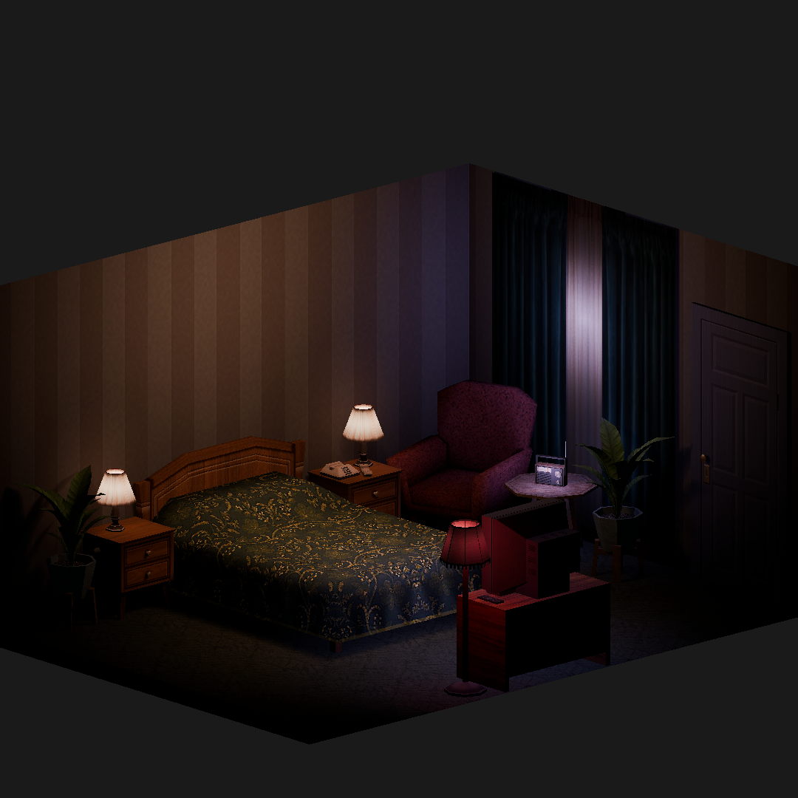
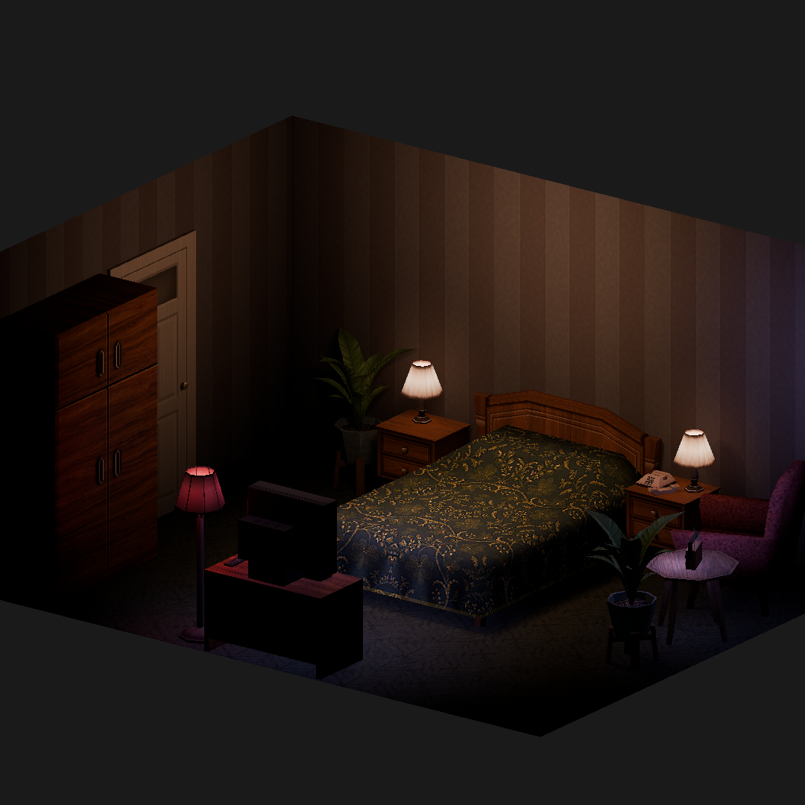
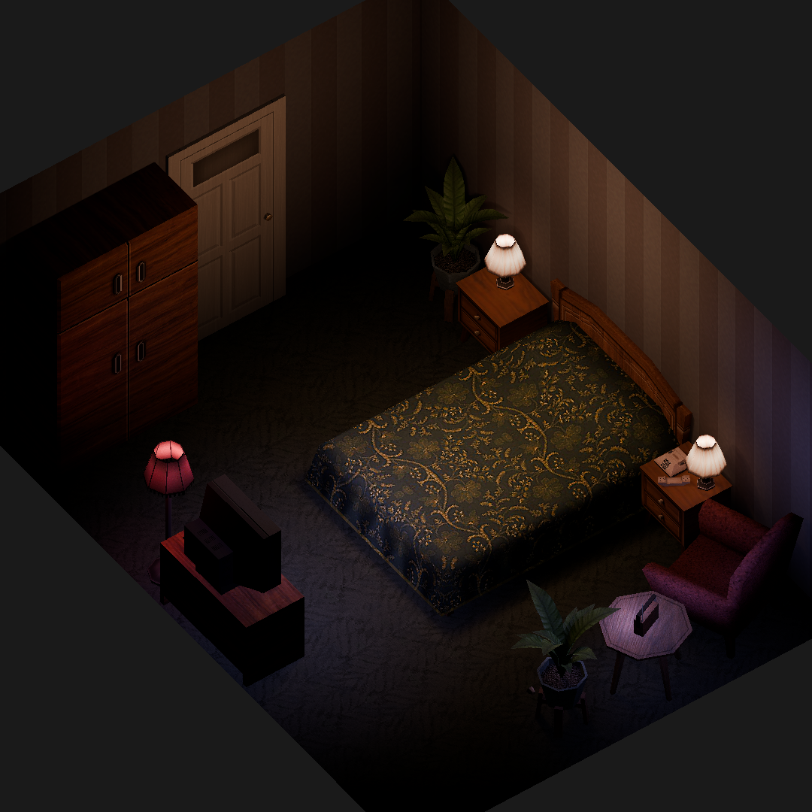
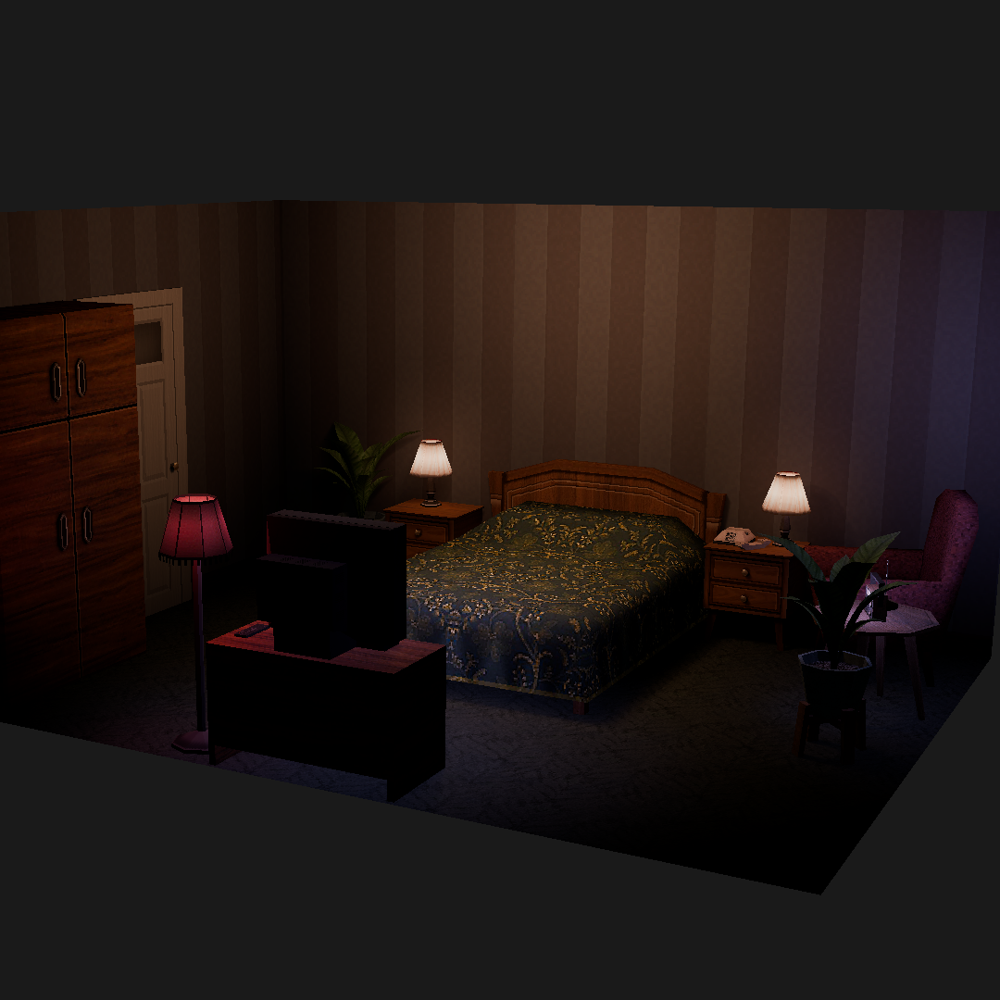
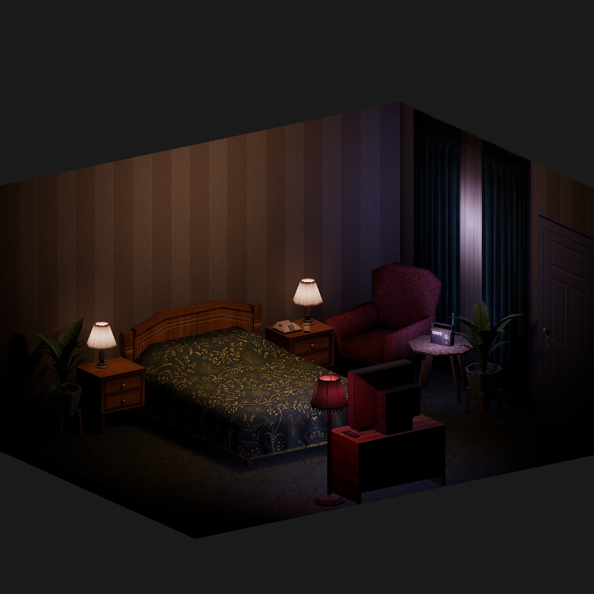

"Retro PS1 Room"
3D Room in Blender
Animated render
Renders





Entorn 3D d'una habitació d'estil retro amb gràfics low-poly de Playstation 1. Feta seguint un tutorial de Summer 85. Models i textures fetes a mà utilitzant Blender i Photoshop.
- Blender
- 3D Modeling
- Asset design
- Photoshop & pixel art
- Retro style